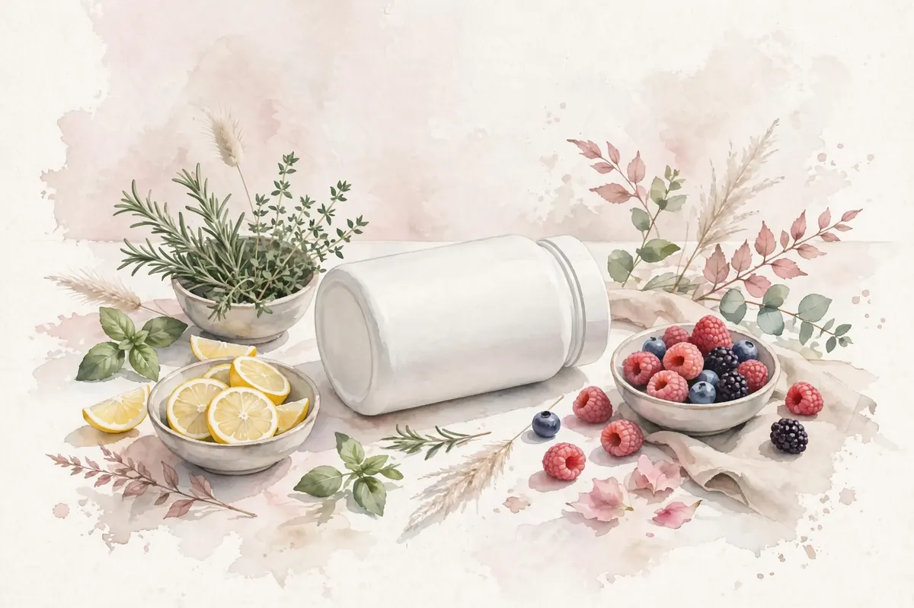

トップ ＞ インナーケア・サプリ ＞ 添加物の表示の見方
添加物の表示の見方

パッケージ裏の原材料名の欄を見ると、途中から少し違う種類の名前が並び始めるところがあります。その境目が、原材料と添加物の区分です。この記事では、添加物の表示の読み方を、一般的な決まりに沿って整理します。
添加物は、原材料と区分して表示される
食品表示の決まりでは、添加物は原材料と区分して表示されます。書き方にはいくつかあり、原材料名の後に「／（スラッシュ）」を入れて続ける方法や、改行して別の欄に分ける方法などがあります。スラッシュの後ろに並んでいるのが添加物、と分かると、長い原材料名の欄も読みやすくなります。
並び順は、原材料と同じく重量の多い順が基本です。添加物の中で何が多いのかも、並びから大まかに読み取れます。名前をすべて覚える必要はなく、まず「境目がどこか」を探すことが読み方の第一歩です。
用途名が併記される書き方がある
添加物の中には、「甘味料（◯◯）」「着色料（◯◯）」のように、用途名と物質名がセットで書かれるものがあります。用途名が書かれていると、その添加物が何のために使われているのかが分かります。買い物の場では、用途名を手がかりに、自分が気になる種類が入っているかどうかを確認できます。
カプセルや錠剤の形を作るための添加物（被膜や固結を防ぐものなど）も、サプリメントではよく使われます。形を保つための材料も表示の対象です。
「無添加」の表示は、対象を確認して読む
「無添加」と書かれた商品を見かけたら、何が無添加なのかを確認して読むのが大切です。「保存料無添加」「着色料無添加」のように対象が明記されている場合は、その範囲での表示です。対象が書かれていない場合は、販売ページの説明などもあわせて確認しましょう。表示の言葉は、その範囲を正確に読むことで、判断材料になります。
添加物の表示は、多い・少ないを断定する材料ではなく、商品の作り方を知るための情報です。境目の見つけ方と用途名の読み方を知っておくと、買い物の比較がしやすくなります。
表示に知らない名前があったときの調べ方も知っておくと便利です。添加物の名称や用途は、消費者庁や自治体の食品表示の案内ページで整理されて公開されています。名前の響きだけで判断せず、用途を確認してから考える習慣が大切です。また、表示は「使われているものを書く」ことが原則ですが、加工の過程で使われて最終製品にはほとんど残らないものなど、扱いが異なる場合もあります。表示の仕組みの全体像は、公的な案内資料で確認するのが確実です。読み方を知ることは、買い物の安心感につながります。
セラフィナ「スラッシュの後ろが添加物の欄。用い方と境目を知ると、表示が読みやすくなるね」